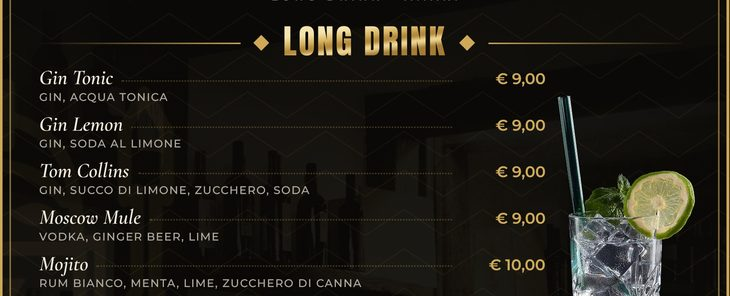
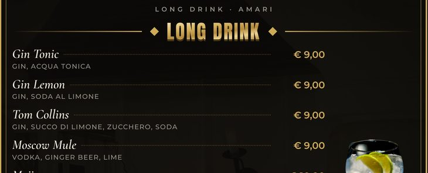
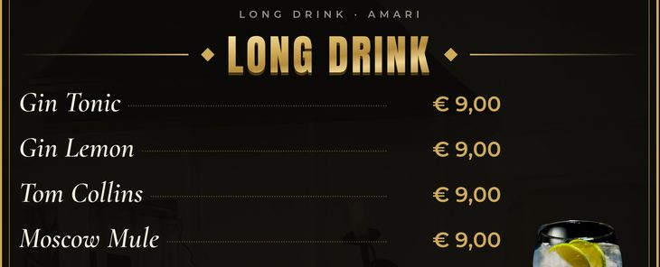
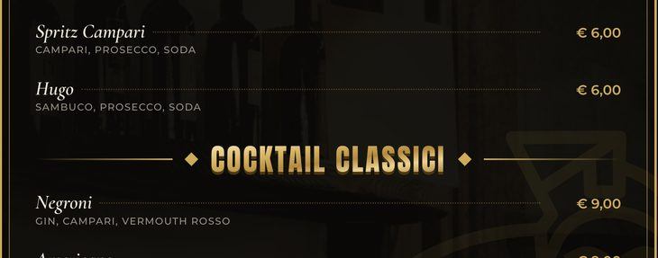
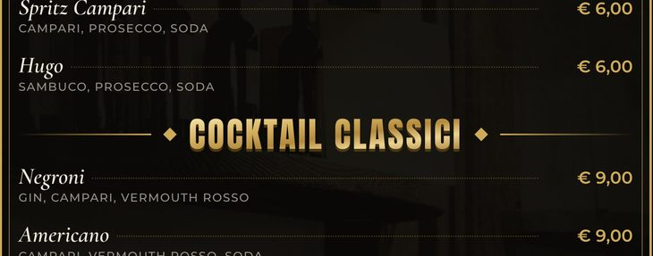
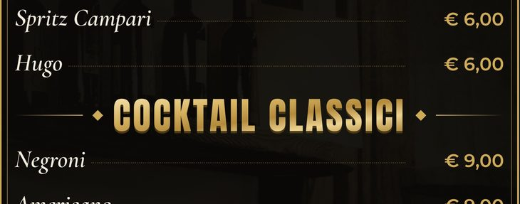

1
Menu drink a libretto
A5 piegato, 4 pagine. Tre grandezze del testo: sceglietene una.
Vai al libretto ↓2
Menu drink lungo
Foglio 14,8 × 42 cm, fronte e retro. Tre grandezze del testo: sceglietene una.
Vai al drink lungo ↓TipografiaIl file da mandare alla tipografia: PDF in alta qualità con 3 mm di margine extra per il taglio.
A4 in casaSolo per il libretto: le pagine già messe su fogli A4, da stampare fronte e retro e piegare a metà.
1
Menu drink a libretto
A5
chiuso
chiuso
aperto
29,6 × 21
29,6 × 21
Si stampa su un foglio A4 orizzontale fronte e retro e si piega a metà.
Le tre versioni hanno gli stessi drink e gli stessi prezzi. Cambia solo la grandezza delle scritte.
Principale
testo normaleLa versione originale, con tutti gli ingredienti sotto ogni drink.
Cop.IIIIIIV
Grandezza del testo (stessa zona di pagina)

Grande
testo più grandeScritte un po' più grandi, sempre con tutti gli ingredienti.
Cop.IIIIIIV
Grandezza del testo (stessa zona di pagina)

Molto grande
testo il più grandeScritte grandi e facili da leggere. Senza la riga degli ingredienti (le birre tengono formati e provenienza).


Cop.IIIIIIV
Grandezza del testo (stessa zona di pagina)

2
Menu drink lungo
14,8
×
42
×
42
Mezzo A3 tagliato in verticale: da un foglio A3 escono due menu.
Fronte: aperitivi, cocktail, long drink, analcolici. Retro: birre, birre in bottiglia, amari, whisky e QR del menu snack.
Principale
testo normaleLa versione originale, con logo grande e tutti gli ingredienti.


FronteRetro
Grandezza del testo (stessa zona di pagina)

Grande
testo più grandeScritte più grandi, con tutti gli ingredienti.


FronteRetro
Grandezza del testo (stessa zona di pagina)

Molto grande
testo il più grandeScritte grandi e facili da leggere. Senza la riga degli ingredienti (le birre tengono formati e provenienza).


FronteRetro
Grandezza del testo (stessa zona di pagina)

3
Menu snack lungo
Fronte: burger, pub classics, finger food e tagliere. Retro: logo, indirizzo, Sky Sport e QR del menu sul telefono.
Snack lungo
unica versioneBurger, Weißwurst, club sandwich, finger food e tagliere, con i prezzi in euro.


FronteRetro